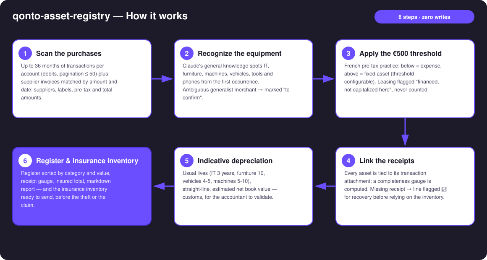
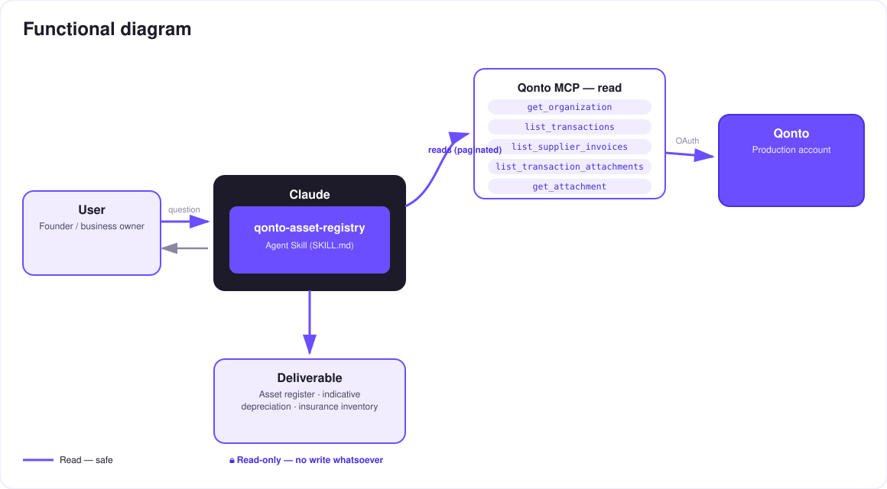

Your account knows what you own — the asset register nobody keeps.
Nobody keeps the fixed-asset register. And the day something gets stolen or the office floods, the insurer asks for the inventory with purchase values and receipts — which nobody has. Yet the Qonto account already knows everything the company owns. The skill reads it:
24–36 months of real purchases (transactions + supplier invoices): IT, furniture, machines, vehicles, tools, telephony — recognized from the first occurrence.
French tax practice: below = expense, above = fixed asset (configurable). Leasing flagged "financed", never counted.
Date, supplier, description, pre-tax/incl-tax amount, linked receipt, status — with a receipt-completeness gauge.
Indicative depreciation (straight-line, estimated net book value — for the accountant to validate) and the insurance inventory, ready to send.
| Prerequisite | Detail | Required |
|---|---|---|
| Qonto production account | Adapts to any organization — get_organization first, nothing hardcoded | ✅ |
| Country | Universal mechanics. €500 threshold + depreciation lives = French practice; other Qonto countries (DE, ES, IT…) → register and inventory without local tax suggestions | ℹ️ detected |
| Qonto MCP connected | Official connector (claude.ai / Claude Desktop), OAuth login | ✅ |
| 24–36 months of history | Below that: partial register, covered period stated | ⭕ |
| Receipts attached | The more there are, the stronger the inventory; missing ones listed 📎 (pointer to qonto-receipt-hunter) | ⭕ |

list_supplier_invoices), matched by amount and date, carry the clean description and the pre-tax amountqonto-receipt-hunter suggested to recover thememitted_at (settlement lags 1–2 days) · untagged VAT → estimated pre-tax amount, disclosed as such · pagination ≤ 50 everywhere
100% read-only — the strongest guarantee: no write tool is ever called. No category changed, no document uploaded, no request created. The register writes itself; the accountant keeps the pen — the €500 threshold and the depreciation lives are customary indications, not accounting entries.
| Category | Usual life | Examples |
|---|---|---|
| IT hardware | 3 years | Computers, monitors, servers, printers |
| Telephony | 3 years | Smartphones, switchboard, pro headsets |
| Tools | 5 years | Workshop tools, power tools |
| Machines | 5–10 years | Production machinery, heavy equipment |
| Vehicles | 4–5 years | Cars, vans, two-wheelers |
| Furniture | 10 years | Desks, chairs, shelving |
| Status | Meaning |
|---|---|
| ✅ Fixed asset | Equipment ≥ threshold (€500 pre-tax by default), registered and depreciated |
| 💰 Expensed | Below the threshold: expensed, listed for the record |
| ❓ To confirm | Generalist merchant, nature undeterminable — the user decides |
| 🔁 Financed | Leasing detected: flagged, never counted in the total |
| 📎 Missing | No linked receipt — pointer to qonto-receipt-hunter |
Disposals and write-offs are declared by the user, never assumed.
| Output | Format | When |
|---|---|---|
| Conversation reply | Markdown tables: register sorted by category/value, depreciation, summary (N assets · total value · receipt gauge) | Always — the baseline |
| Dashboard / export | Self-contained HTML file/artifact in the Qonto palette: register by category, completeness gauge, insured total, depreciation timeline | When the host renders files; automatic fallback to tables |
| Insurance inventory | Ready-to-send table: description, purchase date, value, receipt | On demand — ideally before the claim |
The ≤ 3-minute demo attached to the PR walks through: the problem (the inventory your insurer demands and nobody has) → the scan → the register with linked receipts → the "it was all already there" moment → the dashboard and the insurance inventory. It runs live on a real production account.
| Idea | Effort | Note |
|---|---|---|
| Country modules (DE · ES · IT · AT · NL · BE · PT thresholds and lives) | Medium | The mechanics are already universal; only local practice is missing |
| Disposal detection from incoming credits (resale) | Medium | Always proposed for confirmation, never assumed |
| Reconciliation with a physical inventory (photos, asset tags) | Medium | Makes the insurance inventory defensible |
| End-of-depreciation alerts (renewal budgeting) | Low | Reuses the end-of-life dates already computed |
| CSV export for the accounting firm | Low | Alongside qonto-accountant-handoff |